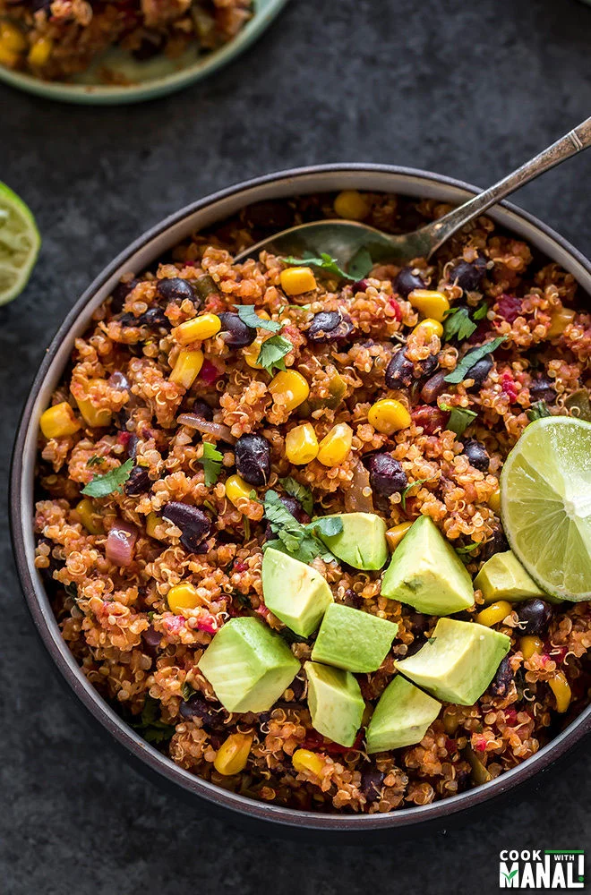

Instant Pot Mexican Quinoa

Mexican Quinoa flavored with cumin,
smoked paprika and chili powder.
This easy one pot meal is made in
the Instant Pot and is the perfect
meal for those busy days.
Ingredients:
- 1 tablespoons olive oil
- small red onion, chopped
- 3 garlic cloves
- 1 jalapeno, chopped
- 14.5 oz can fire roasted tomatoes
- 3/4 cup corn kernels
- 15 oz can black beans
- 1/2 teaspoon cumin powder
- 1/2 teaspoon smoked paprika
- 1/4 teaspoon red chili powder
- 3/4 teaspoon salt
- 1/8 teaspoon black pepper
- 1 cup quinoa, uncooked
- 1-1.25 cups water or vegetable broth
- 2-3 tablespoons chopped cilantro
- juice of 1 lime
- 1 avocado, diced
Steps:
- Press the saute button on the Instant Pot.
Once it displays hot, add oil to it and then
add the chopped onion, garlic and jalapeño.
Saute for 2 minutes until the onion is softened.
- Add the black beans, fire-roasted crushed tomatoes
and corn kernels. Mix well. I used frozen corn
kernels and put them in warm water for 5 minutes
before adding to the pot.
- Add the spices – cumin, smoked paprika, chili powder.
Also add the salt and black pepper and mix.
- Add the quinoa and toss until well combined.
Then add the water or vegetable broth and mix.
- Close the pot with its lid. Press the manual
or pressure cook button and cook on high pressure
for 1 minute with the pressure valve in the sealing
position. Let the pressure release naturally.
- Open the pot, fluff the quinoa with a fork.
Add cilantro and lime juice.
- Add in the diced avocados and serve Mexican Quinoa
immediately. You may also top it with guacamole,
salsa or some sour cream!